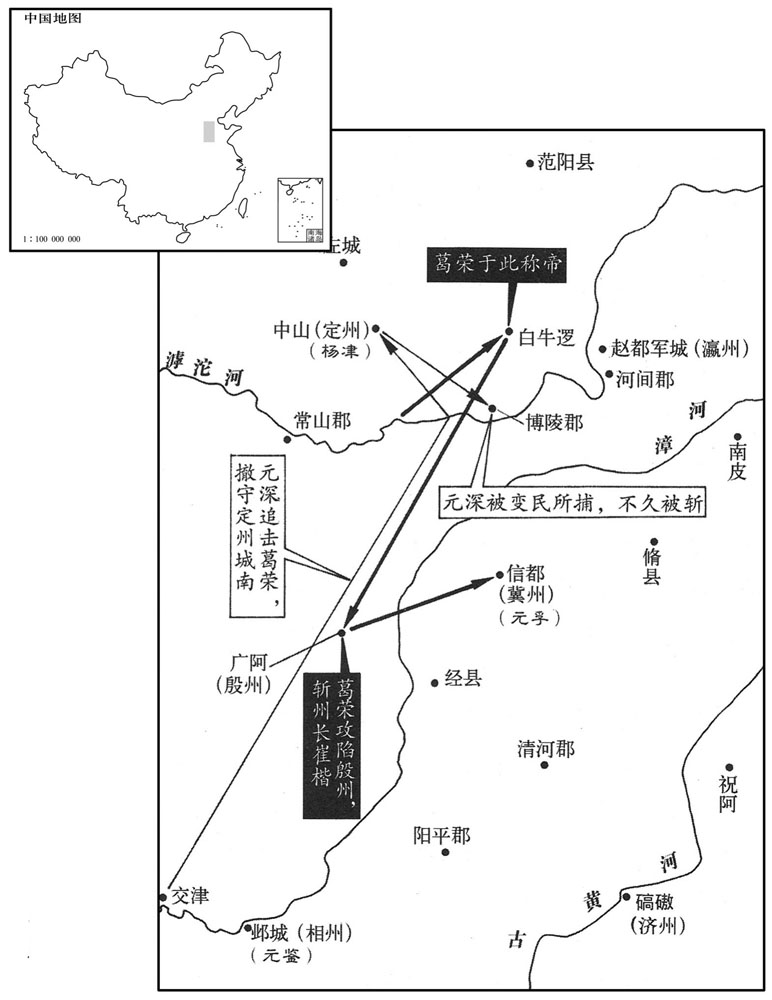

公元526年资治通鉴：本年记事、原文与白话对照
按原书编年位置阅读；追叙和史论不等于本年发生的事件。白话采用所据译本，缺译不以生成译文补齐。
卷151 · 本年记事
公元526年 · 梁高祖武皇帝普通七年
普通七年〔（丙午、五二六）〕
上传原文的注释括号有异常，字符原样保留；无法可靠划分的段落默认全文显示。
本年事件索引（现代整理）
- 梁武帝正月辛丑朔大赦
- 北魏任汝南王元悦兼领太尉
- 安州三戍兵响应杜洛周起事，崔仲晢战死
- 元深与元徽妃私通，恒州降户谋奉元深为主
- 鲜于修礼率北镇流民在定州起兵，杨津入城固守
- 北魏解除北伐军戒严
- 敕勒斛律汳阳在桑干西起兵，尔朱荣击破叛军
- 北魏大赦
- 元徽与徐纥排挤元顺，元顺当面痛斥徐纥
- 朔州城民鲜于阿胡等人据城反魏
- 杜洛周南掠蓟城，常景等击退叛军
- 长孙稚与河间王元琛争执失和，讨伐军败于鲜于修礼
- 北魏下诏北征，旋即停止
- 元略获准归魏，魏厚礼迎接并授官封王
- 北魏任高阳王元雍为大司马，再命元深统军讨伐鲜于修礼
- 元徽挑拨元深与朝廷关系，元深请求将元徽外调
- 元徽与郑俨等结党营私，北魏政局愈乱
- 燕州刺史崔秉弃城率众逃往定州
- 北魏命宗正珍孙讨伐汾州叛胡
- 陈双炽聚众称王，薛修义劝降成功
- 元略改封东平王并受胡太后重用
- 杜洛周屡遭常景击败，南奔范阳
- 鲜于阿胡攻陷平城，元纂逃往冀州
- 寿阳水患严重，梁军分道进攻黎浆与寿阳
- 元洪业斩杀鲜于修礼请降，葛荣杀元洪业自立
- 尔朱荣袭取肆州，擒尉庆宾并任命亲属为刺史
- 平城陷落后贺拔兄弟失散，尔朱荣收贺拔胜为部将
- 鄱阳忠烈王萧恢去世
- 葛荣吞并杜洛周部众后称帝建齐，于谨为元深释疑
- 元深退至定州遭杨津猜忌，被葛荣俘获杀害
- 常景击破杜洛周，斩其部将并俘获四百人
- 就德兴攻陷平州，杀死刺史王买奴
- 吕伯度反复归附后被万俟丑奴杀害，胡琛也遭拔陵诱杀
- 梁大赦
- 丁贵嫔去世，太子萧纲哀毁过度
- 梁军接连攻取魏城，李宪以寿阳降梁
- 杜洛周围困范阳，幽州刺史王延年等开城投降
- 齐州平原百姓刘树起事，房士达奉命讨平
- 曹义宗据穰城进逼新野，魏军出兵救援
- 辛雄上疏批评北魏征讨失当与横征暴敛，朝廷不纳

本年形势与背景参考图
春，正月，辛丑朔，大赦。
春季，正月辛丑朔（初一），梁朝大赦天下。
壬子，魏以汝南王悦领太尉。
壬子（十二日），北魏命令汝南王元悦兼任太尉。
魏安州石离、穴城、斛盐三戍兵反，应杜洛周，众合二万，洛周公松岍赴之。〔水经注：大榆河出御夷镇北塞中，南流径密云戍西，又南流径孔山西，又历密云戍东，右合孟广鲋水。鲋水西径孔山南，上有洞穴开明，故谓之孔山。大榆河又东南流，白杨泉水注之。水北发白杨溪望离石。大榆河又东南流出峡，径安州旧渔阳郡之滑盐县南，世谓之斛盐城，西北去御夷镇二百里。岍，轻烟翻，或曰：岍，鲋字之误也。读作「陉」。唐志：营州西北百里曰松陉岭。〕行台常景使别将崔仲晢屯军都关以邀之，〔将，即亮翻。〕仲哲战没，元谭军夜溃，〔元谭军于居庸关，见上卷上年。〕魏以别将李琚代谭为都督。仲哲，秉之子也。〔崔秉时为燕州刺史。〕
北魏安州的石离、穴城和斛盐三戍的守兵哗变，响应杜洛周，叛兵聚合起来有两万之多，杜洛周从松岍出发赶赴叛兵所在地。行台常景指派别将崔仲哲驻扎在军都关截击杜洛周，崔仲哲战败而全军覆没，元谭的军队在夜间溃逃而散，北魏委派别将李琚代替元谭担任都督。崔仲哲是崔秉的儿子。
初，魏广阳王深通于城阳王徽之妃。徽为尚书令，为胡太后所信任；会恒州人请深为刺史，徽言深心不可测。及杜洛周反，五原降户在恒州者谋奉深为主，深惧，上书求还洛阳。〔时深军于朔州。恒，户登翻。降，户江翻。上，时掌翻。〕魏以左卫将军杨津代深为北道大都督，诏深为吏部尚书。徽，长寿之子也。〔长寿，景穆子也。〕
早先之时，北魏广阳王元深同城阳王元徽的妃子通奸。元徽担任了尚书令，深受胡太后的信任。恰好恒州人请求元深担任刺史，而元徽则说元深城府太深，难以测知。到杜格周反叛时，住在恒州五原的降户策划要拥戴元深为主子，元深害怕了，上书朝廷请求回洛阳。北魏委派左卫将军杨津代替元深担任北道大都督，诏令元深担任吏部尚书。元徽是元长寿的儿子。
五原降户鲜于修礼等帅北镇流民反于定州之左城，〔按杨津传，左城当在博陵界。又水经注，中山唐县有左人城。帅，读曰率。〕改元鲁兴，引兵向州城，州兵御之不利。杨津至灵丘，〔灵丘县，汉属代郡，唐为蔚州。〕闻定州危迫，引兵救之，入据州城。修礼至，津欲出击之，长史许被不听，津手剑击之，〔手，首又翻。此以记檀弓「子手弓」释文为据。〕被走得免。津开门出战，斩首数百，贼退，人心少安。〔少，诗沼翻。〕诏寻以津为定州刺史兼北道行台。魏以扬州刺史长孙稚为大都督北讨诸军事，与河间王琛共讨修礼。〔长，知两翻。琛，丑林翻。〕
五原的降户鲜于礼等人率领北镇流民在定州的左城造反，改年号为鲁兴，带兵向州城进发，州兵抵抗而失利。杨津到了灵丘，闻知定州情况危急，便领兵前去援救，入据州城。鲜于礼到了，杨津准备出城迎击他，长史许被不允许，杨津手拿宝剑去刺许被，许被跑开而得以幸免。杨津打开城门出战，斩首数百，贼寇撤退了，人心才稍微安定了些。朝廷很快诏令杨津担任定州刺史兼北道行台。北魏任命扬州刺史长孙稚为大都督北讨诸军事，让他与河间王元琛共同讨伐鲜于礼。
二月，甲戌，北伐众军解严。
二月甲戌（初五），北伐的各路军队解除戒严。
魏西部敕勒斛律汳阳反于桑干西，〔干，音干。〕与费也头牧子相连结。三月，甲寅，游击将军尔朱荣击破洛阳于深井，牧子于河西。〔北河之西。〕
北魏西部敕勒斛律洛阳在桑乾西边造反，与费也头牧子相互连通。三月甲寅（十五日），游击将军尔朱荣在深井打败了斛律洛阳，又在北河西边打败了费也头牧子。
魏大赦。
北魏大赦天下。
癸巳，魏以侍中、车骑大将军城阳王徽为仪同三司。〔骑，奇寄翻。〕徽与给事黄门侍郎徐纥共毁侍中元顺于太后，出为护军将军、太常卿。顺奉辞于西游园，纥侍侧，顺指之谓太后曰：「此魏之宰鲐，〔宰鲐，吴太宰鲐也，好谗，吴王夫差信而任之，以至亡国。鲐，匹鄙翻。〕魏国不亡，此终不死！」纥胁肩而出，〔朱元晦曰：胁肩，竦体也，小人侧媚之态。〕顺抗声叱之曰：「尔刀笔小才，止堪供几案之用，岂应污辱门下，斁我彝伦！」〔污，乌故翻。斁，多路翻，败也。〕因振衣而起。太后默然。
癸巳（二十五日），北魏任命侍中、车骑大将军城阳王元徽担任仪同三司。元徽与给事黄门侍郎徐纥一同在胡太后面前诋毁侍中元顺，使他外出为护军将军、太常卿。元顺在西游园向胡太后辞行，徐纥侍立在胡太后身侧，元顺指着徐纥对胡太后说：“此人是魏国的宰，魏国不亡，他终不死！”徐纥耸着肩膀出去了，元顺大声叱斥徐纥：“你的那点刀笔小才，只堪供几案之用，岂可以污辱门下，败坏我天地人之常道！”于是拂衣而起。胡太后默不作声。
魏朔州城民鲜于阿胡等据城反。〔阿，从安入声。〕
北魏朔州城的平民鲜于阿胡等人占据州城而造反。
杜洛周南出，钞掠蓟城，魏常景遣统军梁仲礼击破之。丁未，都督李琚与洛周战于蓟城之北，败没。常景帅众拒之，洛周引还上谷。〔钞，楚交翻。蓟，音计。帅，读曰率。〕
杜洛周南下，抢掠蓟城，北魏的常景派遣梁仲礼击败了他。丁未（疑误），都督李琚与杜洛周在蓟城北边交战，李琚战败覆没。常景率众抵抗杜洛周，杜洛周带着人马回到了上谷。
长孙稚行至邺，诏解大都督，以河间王琛代之。稚上言：「向与琛同在淮南，琛败臣全，〔谓为裴邃所败，事见上卷上年。〕遂成私隙，今难以受其节度。」魏朝不听。〔朝，直遥翻。〕前至呼沱，稚未欲战，琛不从。鲜于修礼邀击稚于五鹿，〔杜预曰：阳平元城县有五鹿，即沙鹿也。按呼沱不至元城界，此别有五鹿，非左氏所谓五鹿也。沱，徒河翻。〕琛不赴救，稚军大败，稚、琛并坐除名。
长孙稚走到邺地时，朝廷诏令解除了他的大都督职务，以河间王元琛代替他。长孙稚上奏说：“前次我与元琛同在淮南，元琛失败而我独以保全，于是便产生了私隙，现在我实在难以接受他的指挥调遣。”北魏朝廷没有准许。前进到呼沱时，长孙稚不想出战，但元琛不许，强迫他出战。鲜于礼在五鹿截击了长孙稚，元琛没有前去援救，长孙稚的军队一败涂地，长孙稚、元琛一并获罪而被除名。
五月，丁未，魏主下诏将北讨，内外戒严，既而不行。
五月丁未（初九），北魏孝明帝颁下诏书将要北征，朝廷内外戒严，但是最后却没有成行。
衡州刺史元略，自至江南，晨夕哭泣，常如居丧。及魏元叉死，〔叉死见上卷上年。丧，息郎翻。〕胡太后欲召之，知略因刁双获免，〔事见一百四十九卷普通元年。〕征双为光禄大夫，遣江革、祖暅之南还以求略。〔江革、祖暅之没魏见上卷上年。暅，古邓翻。〕上备礼遣之，宠赠甚厚。略始济淮，魏拜略为侍中，赐爵义阳王；以司马始宾为给事中，栗法光为本县令，刁昌为东平太守，刁双为西兖州刺史。凡略所过，一餐一宿皆赏之。〔略来奔见一百四十九卷元年。栗法光，屯留人。魏孝昌十年置西兖州于定陶，领沛、济阴二郡。是年则孝昌二年也。〕
衡州刺史元略，自从到了江南以来，早晚哭泣，常常如居丧那样。到北魏元叉死后，胡太后想召元略回来，她知道元略因刁双而获免，便征召刁双为光禄大夫，遣送江革、祖之返回南方以便换回元略。梁武帝以周到的礼节遣送元略回去，对他的恩宠馈赠特别丰厚。元略刚渡过了淮河，北魏便委任他为侍中，赐爵位为义阳王。北魏任命司马始宾为给事中，栗法光为本县县令，刁昌为东平太守，刁双为西兖州刺史。凡是元略所经过的地方，一餐一宿都给予赏赐。
魏以丞相高阳王雍为大司马。复以广阳王深为大都督，讨鲜于修礼；〔复，扶又翻。〕章武王融为左都督，裴衍为右都督，并受深节度。
北魏任命丞相高阳王元雍为大司马。又任命广阳王元深为大都督，让他讨征鲜于礼。任命章武王元融为左都督，裴衍为右都督，两人俱接受元深的指挥调遣。
深以其子自随，城阳王徽言于太后曰：「广阳王携其爱子，握兵在外，将有异志。」乃敕融、衍潜为之备。〔疑则勿任，任则勿疑。既以深为大督，而又使小督备之，何以责其殄寇乎！〕融、衍以敕示深，深惧，事无大小，不敢自决；太后使问其故，对曰：「徽衔臣次骨，〔李奇曰：次骨者，言深刻至骨。〕臣疏远在外，徽之构臣，无所不为。自征执政以来，臣所表请，多不从允。徽非但害臣而已，从臣将士，有勋劳者皆见排抑，不得比他军，仍深被憎嫉，或因其有罪，加以深文，至于殊死，以是从臣行者，莫不悚惧。有言臣善者，视之如仇雠，言臣恶者，待之如亲戚。徽居中用事，朝夕欲陷臣于不测之诛，臣何以自安！陛下若使徽出临外州，臣无内顾之忧，庶可以毕命贼庭，展其忠力。」太后不听。〔为深死于盗手张本。〕
元深让自己的儿子随行，城阳王元徽告诉胡太后说：“广阳王携带着他的爱子，握兵在外，将会产生异心。”于是胡太后便命令元融、裴衍暗中对元深崐加以防备。元融、裴衍把胡太后的旨令出示给元深，元深害怕了，因此事情不论大小，都不敢自己决定。胡太后派人问其缘故，元深回答：“元徽恨我恨得入骨，我远在外地，与朝廷关系疏远，元徽陷害我，手段无所不用。自从元徽执政以来，我的表奏请示，大多不能获准。元徽不但谋害我而已，凡是跟随我的将士中有功劳的人都受到他的排挤压制，无法同别的军队相比，但是就这样还仍然备受仇恨、嫉妒，有的人稍有罪过，他便加以苛求罗织，以至于被斩首，所以跟从我的人，无不恐惧不安。如果有谁说我好，元微便对他视如仇敌，而对说我坏话的人，元徽便对待他如亲戚一般。元徽在朝中掌权，从早到晚想致我于死地，我如何能够放心得了呢？陛下如果让元徽出朝到外州任职，我便没有了内顾之忧，庶几可以战死于贼庭之上，为朝廷效忠尽力。”胡太后没有准许元深的请求。
徽与中书舍人郑俨等更相阿党，〔更，工衡翻。〕外似柔谨，内实忌克，赏罚任情，魏政由是愈乱。
元徽同中书舍人郑俨等人迭相循私舞弊，违法乱纪，他从外表上看好象挺温和谨慎，而内中实则非常忌恨别人超过自己，在赏罚方面随心所欲，北魏的朝政因此而更加混乱了。
戊申，魏燕州刺史崔秉帅众弃城奔定州。〔燕州自去年八月为杜洛周所围。燕，因肩翻。〕
戊申（初十），北魏燕州刺史崔秉率领众人弃城投奔定州。
乙丑，魏以安西将军宗正珍孙为都督，〔宗正，复姓，汉楚元王交之子郢客孙德，世为宗正，子孙因以为氏。〕讨汾州反胡。〔讨刘蠡升也。〕
乙丑（二十七日），北魏任命安西将军宗正珍孙为都督，让他去讨伐汾州反叛了的胡人。
六月，魏绛蜀陈双炽聚众反，〔蜀人徙居绛郡者，谓之绛蜀。绛县，汉、晋属河东郡，元魏分置绛郡；魏收志，郡属东雍州。〕自号始建王。魏以假镇西将军长孙稚为讨蜀都督。〔考异曰：费穆传：「穆为都督，平绛蜀。」不应有两都督。今从帝纪。〕别将河东薛修义轻骑诣双炽垒下，晓以利害，双炽即降。诏以修义为龙门镇将。〔此龙门在河东北屈县西。魏世祖神脉元年，禽赫连昌，改北屈为禽昌县。将，即亮翻。降，户江翻。〕
六月，北魏绛蜀的陈双炽聚众造反，自称为始建王。北魏任命代理镇西将军长孙稚为讨蜀都督。别将河东人薛义轻骑来到陈双炽的战垒前面，对他晓以利害，陈双炽便很快投降了。朝廷诏令任命薛义为龙门镇将。
丙子，魏徙义阳王略为东平王，顷之，迁大将军、尚书令，为胡太后所委任，与城阳王征相埒，〔埒，力辍翻。〕然徐、郑用事，畈亦不敢违也。〔魏当时宗室，略其巨擘也。史言其居淫昏之朝，不能矫正。〕
丙子（初九），北魏迁移义阳王元略为东平王，不久之后，又提升他为大将军、尚书令，他深受胡太后的信任，与城阳王元徽受信任的程度等同，但是徐纥、郑俨专权，元略也不敢有所违抗。
杜洛周遣都督王曹纥真等将兵掠蓟南，〔时杜洛周、葛荣等作乱，其军中将领无不加以王爵，曹纥真以都督加王号，故曰都督王。〕委，七月，丙午，行台常景遣都督于荣等击之于栗园，〔栗园当在范阳固安县界。固安之栗，天下称之。〕大破之，斩曹纥真及将卒三千余级。洛周帅众南趣范阳，〔范阳县，前汉属涿郡，后汉章帝改涿郡为范阳郡。帅，读曰率。趣，七喻翻。〕景与荣等又破之。
杜洛周派遣都督曹纥真等人率兵掠夺蓟南，秋季，七月丙午（初九），行台常景派遣都督于荣等人在栗园攻击曹纥真等人，大败敌人，斩了曹纥真以及将卒三千多名。杜洛周率众南去范阳，常景同于荣等人又击败了杜洛周。
魏仆射元纂以行台镇恒州。鲜于阿胡拥朔州流民寇恒州，戊申，陷平城，纂奔冀州。〔恒州治平城。平城，魏之故都，亦陷于贼，其不竞甚矣。恒，户登翻。〕
北魏仆射元纂以行台身份镇守恒州。鲜于阿胡率领朔州的流民侵犯恒州，戊申（十一日），攻陷了平城，元纂奔投冀州。
上闻堰水盛，寿阳城几没，〔观此，盖淮堰复成也。〕复遣郢州刺史元树等自北道攻黎浆，豫州刺史夏侯亶等自南道攻寿阳。〔复，扶又翻；下荣复同。〕
梁武帝得知淮河堰堤水很大，寿阳城差不多淹没了，便再次派遣郢州刺史元树等人从北道攻打黎浆，派豫州刺史夏侯等人从南道攻打寿阳。
八月，癸巳，贼帅元洪业斩鲜于修礼，请降于魏；〔帅，所类翻。降，户江翻。〕贼党葛荣复杀洪业自立。〔考异曰：北史广阳王深传云：「深以兵士频经退散，人无鬬倩，连营转栅，日行十里，行达交津，隔水而陈。贼修礼常与葛荣谋，后稍信朔州人毛普贤，荣常衔之。普贤昔为深统军，及在交津，深使人谕之，普贤乃有降意。又使录事参军元晏说贼程杀鬼，果相猜贰。荣遂杀普贤、修礼而自立。」与魏帝纪全殊，又其语杂乱难晓。今从帝纪。〕
八月癸巳（二十七日），强盗首领元洪业斩了鲜于礼，请求投降北魏。强盗同伙葛荣又杀了元洪业而自任头领。
魏安北将军、都督恒‧朔讨虏诸军事尔朱荣过肆州，肆州刺史尉庆宾忌之，据城不出。〔尉，纡勿翻。〕荣怒，举兵袭肆州，执庆宾，还秀容，署其从叔羽生为刺史，魏朝不能制。〔此时尔朱荣已有无魏之心矣。从，才用翻。朝，直遥翻。〕
北魏安北将军及都督恒、朔讨虏诸军事尔朱荣路过肆州，肆州刺史崐尉庆宾忌恨他，据城不出。尔朱荣发怒了，领兵袭击了肆州，抓住了尉庆宾，回到了秀容，让他的堂叔尔荣羽生代理肆州刺史，北魏朝廷不能制止。
初，贺拔允及弟胜、岳从元纂在恒州，平城之陷也，允兄弟相失；岳奔尔朱荣，胜奔肆州。荣克肆州，得胜，大喜曰：「得卿兄弟，天下不足平也！」以为别将，〔将，即亮翻。〕军中大事多与之谋。
当初，贺拔允及其弟弟贺拔胜、贺拔岳跟随元纂在恒州，平城失陷之后，兄弟几人相互失散。贺拔岳投奔了尔朱荣，贺拔胜投奔了肆州。尔朱荣攻克肆州之后，得到了贺拔胜，十分高兴地说：“得到了你们兄弟，天下不愁不能平定！”他任命贺拔胜为别将，军中大事大多与贺拔胜商议。
九月，己酉，鄱阳忠烈王恢卒。
九月己酉（十三日），鄱阳忠烈王萧恢去世。
葛荣既得杜洛周之众，〔魏主武泰元年葛荣方并杜格周；此得鲜于修礼之众也。〕北趣瀛州，〔趣，七喻翻。〕魏广阳忠武王深自交津引兵蹑之。〔水经注：漳水过武安县东，清水自涉县东南来注之，世谓决入之所为交漳口。〕辛亥，荣至白牛逻，〔据魏纪，白牛逻，在高阳博野县。逻，郎佐翻。〕轻骑掩击章武庄武王融，杀之。荣自称天子，国号齐，改元广安。深闻融败，停军不进。侍中元晏密言于太后曰：「广阳王盘桓不进，坐图非望。有于谨者，智略过人，为其谋主，风尘之际，恐非陛下之纯臣也。」太后深然之，诏牓尚书省门，募能获谨者有重赏。谨闻之，谓深曰：「今女主临朝，〔朝，直遥翻。〕信用谗佞，苟不明白殿下素心，恐祸至无日。谨请束身诣阙，归罪有司。」遂径诣牓下，自称于谨，有司以闻。太后引见，大怒。〔见，贤遍翻。〕谨备论深忠款，兼陈停军之状，太后意解，遂舍之。
葛荣得到了杜洛周的部众之后，北去瀛州，北魏广阳忠武王元深从交津领兵追踪葛荣而进。辛亥（十五日），葛荣到了白牛逻，率轻骑突袭在章武的庄武王元融，杀了他。葛荣自称天子，定国号为齐，改换年号为广安。元深得知元融失败，便按兵不动。侍中元晏秘密地告诉胡太后：“广阳王徘徊不进，坐图非分之想。有一个叫于谨的人，他智谋才略过人，担任元深的军师，在如今动荡不安之时，恐怕他不是陛下的忠诚之臣。”胡太后对元晏的话深表同意，便张榜于尚书省门前，以重赏招募能抓住于谨的人。于谨得知这一情况之后，对元深说：“如今女主临朝，信任重用谗邪奸佞之徒，假如她不明白殿下您的一片真心，恐怕灾祸很快就会降临。于谨我请求捆绑自己赴朝，向有关官署投案服罪。”于是便径直来到尚书门前的榜文之下，自称是于谨，有关官署把情况报告了朝廷。胡太后召见于谨，勃然大怒。于谨详细地讲述了元深对朝廷的忠诚，兼而说明了停兵不进的原因，胡太后明白了情况，于是便放了于谨。
深引军还，趣定州，〔趣，七喻翻。〕定州刺史杨津亦疑深有异志；深闻之，止于州南佛寺。经二日，深召都督毛谥等数人，交臂为约，危难之际，期相拯恤。〔谥，神至翻。难，乃旦翻。〕谥愈疑之，密告津云，深谋不轨。津遣谥讨深，深走出，谥呼噪逐深。深与左右间行至博陵界，〔间，古苋翻。汉桓帝置博陵郡，元魏属定州。〕逄葛荣游骑，劫之诣荣。〔骑，奇寄翻。〕贼徒见深，颇有喜者，荣新立，恶之，〔恐其徒有欲奉深为主者，故恶之。恶，乌路翻。〕遂杀深。城阳王徽诬深降贼，录其妻子。〔降，户江翻。〕深府佐宋游道为之诉理，乃得释。游道，繇之玄孙也。〔宋繇事西凉李氏；李灭，事沮渠氏；沮渠灭，入魏。为，于伪翻。〕
元深领兵返回，前往定州，定州刺史杨津也怀疑元深有异谋。元深知道情况之后，停在州城南边的南佛寺。两天之后，元深召来都督毛谥等人，同他们订立盟约，约定危难之时，互相援救。于是，毛谥越发怀疑他了。便秘密地告诉杨津，说元深图谋不轨。杨津派遣毛谥讨伐元深，元深跑走了，毛谥带人喊叫着去追逐元深。元深同身边人抄小道到了博陵地界，遇上了葛荣的流动骑兵，便被抓获送到葛荣那里。寇贼们见了元深，喜欢他的人还不少，葛荣刚自立为王，对此很反感，担心手下的人拥奉元深为主，便杀了元深。城阳王元徽诬陷元深投降了贼寇，逮捕了他的妻子、儿子。元深的府佐宋道替他们申诉，才得到释放。宋道是宋繇的玄孙。
甲申，魏行台常景破杜洛周，斩其武川王贺拔文兴等，捕虏四百人。
甲申（疑误），北魏行台常景击败了杜洛周，斩杀杜洛周手下的武川王贺拔文兴等人，捕获了四百人。
就德兴陷魏平州，杀刺史王买奴。〔魏平州治肥如，即唐平州卢龙县地。〕
就德兴攻陷了北魏的平州，杀死了该州刺史王买奴。
天水民吕伯度，本莫折念生之党也，后更据显亲以拒念生；〔汉光武置显亲侯国以封窦友，以其兄融以河西归附，且以显其孝文窦后之亲也；属汉阳郡。后魏属天水郡；至唐时秦州成纪县治显亲川。〕已而不胜，亡归胡琛，〔琛，丑林翻。〕琛以为大都督、秦王，资以士马，使击念生。伯度屡破念生军，复据显亲，〔复，扶又翻；下生复同。〕乃叛琛，东引魏军。念生窘迫，乞降于萧宝寅，〔窘，渠陨翻。〕宝寅使行台左丞崔士和据秦州。魏以伯度为泾州刺史，封平秦郡公。〔魏太延二年，置平秦郡于雍县，属岐州。〕大都督元修义停军陇口，久不进，〔陇口，陇坻之口。〕念生复反，执士和送胡琛，于道杀之。久之，伯度为万俟丑奴所杀，〔万，莫北翻。俟，渠之翻。〕贼势益盛，宝寅不能制。胡琛与莫折念生交通，事破六韩拔陵浸慢，〔琛应拔陵见上卷五年。〕拔陵遣其臣费律至高平，诱琛，斩之，〔诱，音酉。〕丑奴尽并其众。
天水百姓吕伯度，本来是莫折念生的同党，后来又占据显亲这个地方抵抗莫折念生，接着因不能取胜，便跑去投靠了胡琛，胡琛任命他为大都督、秦王，资助他兵力战马，让他去攻打莫折念生。吕伯度多次打败莫折念生的军队，又占据了显新，于是反叛了胡琛，从东边引来了北魏军队。莫折念生穷途无路，向萧宝寅乞求投降，萧宝寅指使行台左丞崔士和占据了秦州。北魏任命吕伯度为泾州刺史，封他为平秦郡公。大都督元义把军队停在陇口，久而不进，莫折念生又反叛了，抓住崔士和送往胡琛那里，在路上杀了崔士和。之后，吕伯度被万俟奴杀了，于是贼寇的势力更加强大，萧宝寅无法加以制伏。胡琛与莫折念生相互勾通，对破六韩拔陵渐渐不恭起来，破六韩拔陵派遣他的臣子费律到了高平，诱惑胡琛，斩了胡琛，万俟奴把胡琛的部众全部兼并。
冬，十一月，庚辰，大赦。
冬季，十一月庚辰（十五日），梁朝大赦天下。
丁贵嫔卒，太子水浆不入口，〔太子统，丁贵嫔所生也。卒，子恤翻。〕上使谓之曰：「毁不灭性，引孝经孔子之言。〕况我在邪！」乃进粥数合。〔合，古沓翻。汉志曰：十龠为合。合者，合龠之量也。〕太子体素肥壮，腰带十围，至是减削过半。〔过，工禾翻。〕
丁贵嫔去世，太子萧统因生母亡故而点水不进，梁武帝派人对他说：“哀伤不能毁了性命，何况我还在呢！”于是萧统才喝粥数合。太子萧统身体向来肥壮，腰带有十围之长，可是到现在却减削过半。
夏侯亶等军入魏境，所向皆下。辛巳，魏扬州刺史李宪以寿阳降，〔降，户江翻；下同。〕宣猛将军陈庆之入据其城，凡降城五十二，获男女七万五千口。丁亥，纵李宪还魏，复以寿阳为豫州，〔自宋以来，以寿阳为豫州。裴叔业叛齐降魏，魏以寿阳为扬州，复汉、魏之旧也。今复以寿阳为豫州，复宋、齐之旧也。复以，扶又翻，又如字。〕改合肥为南豫州，〔天监五年徙豫州治合肥。〕以夏侯亶为豫、南豫二州刺史。寿阳久罹兵革，民多离散，亶轻刑薄赋，务农省役，顷之，民户充复。
夏侯等人的军队进入北魏境内，所向披靡，无城不摧，辛巳（十六日），北魏扬州刺史李宪献出寿阳投降，宣猛将军陈庆之入据该城，一共有五十二城投降，俘获男女七万五千名，丁亥（二十二日），梁朝放李宪回北魏，又以寿阳为豫州，改合肥为南豫州，任命夏侯为豫、南豫二州刺史。寿阳久遭战乱，百姓大多离散，夏侯减轻刑罚，减少税赋，经营农业，减免劳役，很快，民户又多起来了。
杜洛周围范阳，戊戌，民执魏幽州刺史王延年、行台常景送洛周，开门纳之。〔常景击杜洛周，数战数胜，而终于为虏者，民乐于从乱而疾视其上也。〕
杜洛周围攻范阳，戊戌（疑误），范阳百姓抓住了北魏幽州刺史王延年、行台常景，把他们送给杜洛周，杜洛周开门接纳了他们。
魏齐州平原民刘树等反，〔宋武帝侨置平原郡于梁邹，属冀州；后入于魏，改冀州为齐州，平原为东平原郡。〕改陷郡县，频败州军，刺史元欣以平原房士达为将，讨平之。〔败，补迈翻。将，即亮翻。〕
北魏齐州平原郡的百姓刘树等人造反，攻陷郡县，频频地击败州里的军队，刺史元欣任用平原人房士达为将领，讨平了刘树等人的叛乱。
曹义宗据穰城以逼新野，〔穰，人羊翻。〕魏遣都督魏承祖及尚书左丞、南道行台辛纂救之。〔考异曰：梁书，此年冬，新野降；魏书，肃宗崩后，新野犹在；恐梁书误。盖梁自前年攻新野，此年魏使魏承祖救之也。又周于谨传云：「孝昌二年与辛纂讨义宗。」今以为据。〕义宗战不利，不敢进。纂，雄之从父兄也。
曹义宗占据了穰城而逼迫新野，北魏派遣都督魏承祖以及尚书左丞、南道行台辛纂去援救。曹义宗交战失利，不敢前进。辛纂是辛雄的堂兄。
魏盗贼日滋，征讨不息，国用耗竭，豫征六年租调，犹不足，〔调，徒吊翻。〕乃罢百官所给酒肉，又税入市者人一钱，乃邸店皆有税，百姓嗟怨。吏部郎中辛雄上疏，以为：「华夷之民相聚为乱，岂有余憾哉﹖正以守令不得其人，〔守，式又翻。〕百姓不堪其命故也。宜及此时早加慰抚。但郡县选举，由来共轻，贵游儁才，莫肯居此。宜改其弊，分郡县为三等，清官选补之法，妙尽才望，如不可并，后地先才，不得拘以停年。〔地，门地也。崔亮制停年格，见一百四十九卷天监十八年。后、先，并去声。〕三载黜陟，〔载，子亥翻。〕有称职者，补在京名官；〔称，尺证翻。〕如不历守令，不得为内职。则人思自勉，枉屈可申，强暴自息矣。」不听。
北魏国内盗贼日益增多，征讨不停，国家财用耗竭，提前征收了六年的租调，还不够用，于是又停发了给百官们的酒肉，又向每个进入集市的人征收一个钱的税，以至投住旅店都要纳税，百姓无不嗟怨。吏部郎中辛雄上奏，认为：“汉、夷之民相聚生乱，难道还有别的什么怨恨吗？完全是由于太守、县令任用不当，百姓们不堪于他们的欺压的原故。宜于乘现在对百姓早加抚慰。但是对于郡守县令的选拔向来都不重视，因此王公贵族和才俊之士，都崐不肯担任这些官职。应该改革这一弊端，把郡县分为三等的清官，选补的办法，应当规定才能和门望两个方面同时都要具备，如果不能同时具备，先才能而后门望，不能拘泥于年资的长短。三年升降一次，有称职者，可以委任为京城中的官员；如果没有担任太守、县令的经历，便不能在朝廷内任职。如此一来，便人人思以自勉，百姓的枉屈可以申雪，天下强暴自然平息了。”但是这一建议没有被采纳。
译本中未与胡注本可靠对应的内容
以下另列供核对版本差异，不并入胡注本正文。
译本所附古文
[7]夏，四月，乙酉，临川靖惠王宏卒。
译本白话
夏季，四月乙酉（十七日），梁朝临川靖惠王萧宏去世。